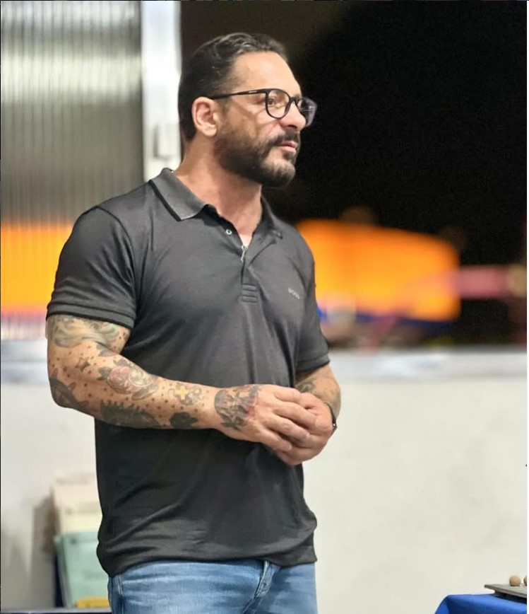

Atendimento Individual
Sessões personalizadas focadas nas questões específicas de cada pessoa — vida profissional, família, relacionamentos e cotidiano.
Terapeuta Holístico • Dependência Química
Ajudo quem quer parar de usar drogas ou álcool e famílias que buscam recuperar um filho ou familiar dependente químico — com atendimento humanizado, presencial e online, como alternativa ao isolamento da internação.

Sou terapeuta holístico dedicado a acompanhar pessoas em momentos de vulnerabilidade, reconstrução e redescoberta de si mesmas.
Minha formação e prática se baseiam no acolhimento genuíno e no encorajamento do paciente, permitindo que cada pessoa tenha as ferramentas necessárias para superar desafios e reconstruir sua vida com autonomia e esperança.
Atuo em atendimentos individuais, terapias de grupo e palestras sobre saúde mental, dependência química e qualidade de vida. Acredito que a sobriedade não é apenas a ausência de substâncias — é um estilo de vida construído com consciência, cuidado e propósito.
"Inspirar através da escuta, da observação e do apoio emocional é o primeiro passo para que alguém recupere a confiança em si e no mundo ao seu redor."
Cada jornada é única. Ofereço diferentes formatos de acompanhamento para atender às suas necessidades.
Sessões personalizadas focadas nas questões específicas de cada pessoa — vida profissional, família, relacionamentos e cotidiano.
Encontros coletivos que promovem troca, pertencimento e aprendizado mútuo em um ambiente seguro e acolhedor.
Apresentações sobre saúde mental, prevenção à dependência química e construção de hábitos saudáveis para empresas e comunidades.
Suporte na reinserção social e reconstrução da rotina após tratamento clínico, mantendo clareza e propósito.
Apoio às famílias no processo de compreensão, acolhimento e fortalecimento dos laços durante a recuperação.
Trabalho preventivo para evitar internações desnecessárias, respeitando o convívio social e a autonomia do paciente.
Seja você quem enfrenta o vício ou um familiar em busca de respostas — este espaço foi criado para acolher a sua dor e oferecer caminhos reais de recuperação.
Se você sente que perdeu o controle, já tentou parar sozinho ou quer superar o vício com apoio profissional, o acompanhamento terapêutico oferece escuta sem julgamento, ferramentas práticas e um plano de recuperação no seu ritmo — presencial ou online.
A descoberta de que seu filho usa drogas gera medo, culpa e desespero. Você não precisa enfrentar isso sozinho. Ofereço orientação familiar para ajudar seu filho com limites saudáveis, acolhimento e um plano de tratamento — muitas vezes como alternativa à internação.
Conviver com um familiar dependente químico esgota emocionalmente. Aprenda a apoiar quem você ama sem codependência, estabelecer limites e buscar a recuperação de toda a família — não apenas do dependente.
A experiência foi organizada para reduzir ansiedade, criar confiança e transformar intenção em próximos passos práticos.
Uma conversa inicial para entender o momento, as urgências e o tipo de apoio mais adequado.
Definição de frequência, objetivos e recursos de acompanhamento respeitando a realidade de cada pessoa.
Sessões com escuta ativa, orientação prática e revisão contínua dos avanços e dificuldades.
Construção de hábitos, rede de apoio e estratégias para manter a transformação no cotidiano.
Trabalho três pilares fundamentais que, juntos, criam uma reflexão profunda e encorajam mudanças duradouras.
Reconectar-se com a essência, valores e identidade autêntica.
Questionar crenças limitantes e reconstruir a mentalidade.
Transformar reflexão em ação concreta no dia a dia.

Artigos sobre dependência química, apoio à família, recuperação e prevenção à recaída.

Orientações práticas para pais que descobriram que o filho usa drogas e não sabem por onde começar.
Ler artigo →
Um guia prático e acolhedor para apoiar quem você ama sem se perder no processo.
Ler artigo →
Quando o acompanhamento terapêutico é uma alternativa real à clínica de reabilitação.
Ler artigo →
O que fazer quando você decide mudar — sem cobrança e respeitando o seu tempo.
Ler artigo →
Estratégias para sustentar a sobriedade e transformar a recuperação em estilo de vida.
Ler artigo →
Quando a internação é necessária — e quando o acompanhamento terapêutico pode ser a melhor opção.
Ler artigo →
Um caminho realista para quem decidiu parar — com apoio, sem julgamento e no seu tempo.
Ler artigo →Assista palestras, depoimentos e conteúdos sobre saúde mental e recuperação.
Este vídeo tem como ênfase citar os processos de uma boa ou ótima recuperação , traçada pelos melhores terapeutas holísticos do Brasil.
Assistir no YouTubeEste tópico visa mostrar alguns tipos de distorções cognitivas, um enorme desafio para um paciente tratar, principalmente sem souber sobre com o que exatamente esta lidando.
Assistir no YouTubeEnvie uma mensagem breve e receba orientação sobre o formato de atendimento mais indicado.
Respostas para quem busca ajuda — seja para si, para um familiar ou como alternativa à internação em clínica.
O primeiro passo é o acolhimento sem julgamento e a busca por apoio especializado. No acompanhamento terapêutico, trabalhamos a escuta, o vínculo de confiança e ferramentas práticas para que a pessoa retome o controle da própria vida, no seu tempo e com suporte contínuo.
Sim. Para muitos casos, o acompanhamento terapêutico individual e em grupo, com apoio familiar, é uma alternativa que preserva o convívio social e a autonomia. Também atuo na prevenção e no acompanhamento pós-internação, ajudando a evitar internações desnecessárias e recaídas.
A família é parte essencial da recuperação. Ofereço orientação familiar para compreender a dependência, estabelecer limites saudáveis, reduzir a codependência e fortalecer os vínculos durante todo o processo de tratamento.
Atendo de forma presencial em São Paulo e também online para todo o Brasil, garantindo acesso ao acompanhamento de onde a pessoa estiver.
Sim. Para quem procura uma alternativa à internação ou um suporte complementar antes, durante e depois de uma clínica, o acompanhamento terapêutico oferece um plano de cuidado personalizado, com foco em consciência, propósito e sobriedade como estilo de vida.
A prevenção à recaída envolve identificar gatilhos, reconstruir rotina e rede de apoio, fortalecer a forma de pensar e agir, e manter acompanhamento contínuo. Esse é um dos pilares do meu trabalho na construção de uma recuperação duradoura.
O primeiro passo é manter o vínculo com acolhimento, sem julgamento, e buscar orientação especializada o quanto antes. Evite encobrir o problema ou assumir todas as consequências do uso. Com apoio terapêutico, a família aprende limites saudáveis e o jovem recebe ferramentas para a recuperação.
A internação deve ser considerada apenas em casos extremos: risco de vida, recusa total de ajuda ou impossibilidade de manter segurança em casa. Na maioria dos casos, o acompanhamento terapêutico com apoio familiar é uma alternativa eficaz que preserva o convívio social.
Mudanças de comportamento, isolamento, queda no desempenho, alterações de humor, mentiras frequentes, pedidos de dinheiro e perda de interesse em atividades podem indicar uso problemático. Quanto antes buscar ajuda, maiores as chances de recuperação.
Reconhecer que precisa de ajuda já é o primeiro passo. Busque acompanhamento terapêutico que respeite seu tempo, trabalhe gatilhos e rotina, e ofereça apoio contínuo — presencial ou online, conforme sua realidade.
Sim. O atendimento online permite acompanhamento regular, orientação familiar e suporte emocional contínuo para dependentes e familiares em qualquer cidade do Brasil.
O primeiro passo é sempre uma conversa. Estou aqui para ouvir, acolher e, juntos, traçarmos o caminho mais adequado para você.